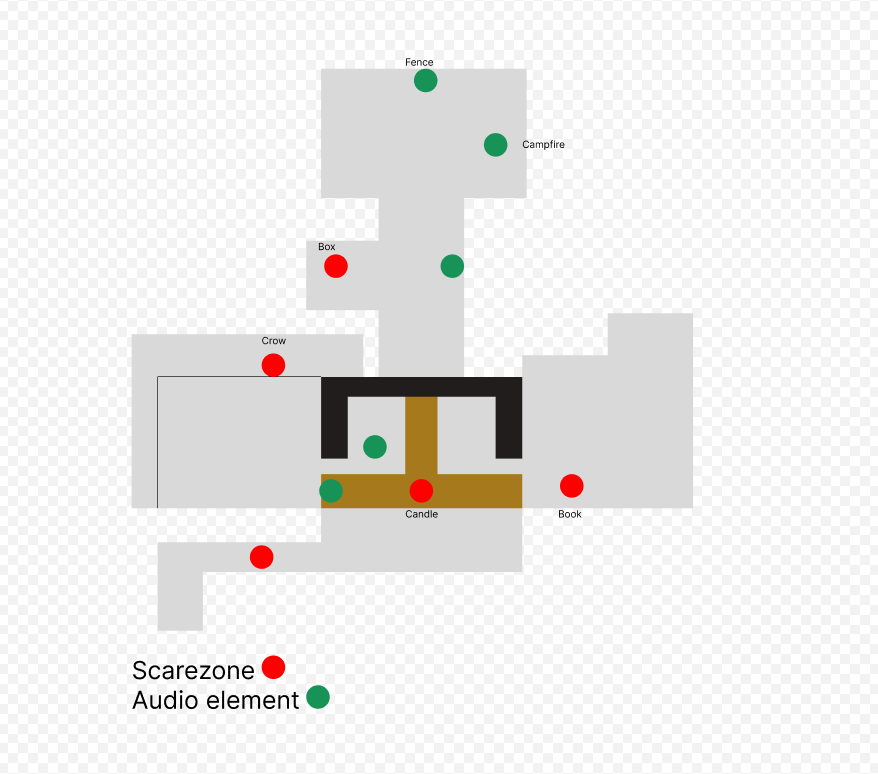
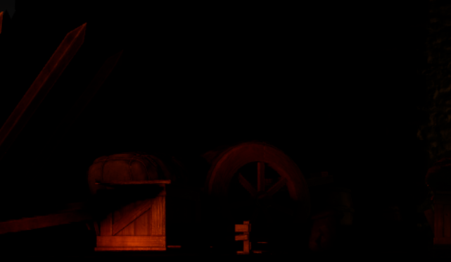
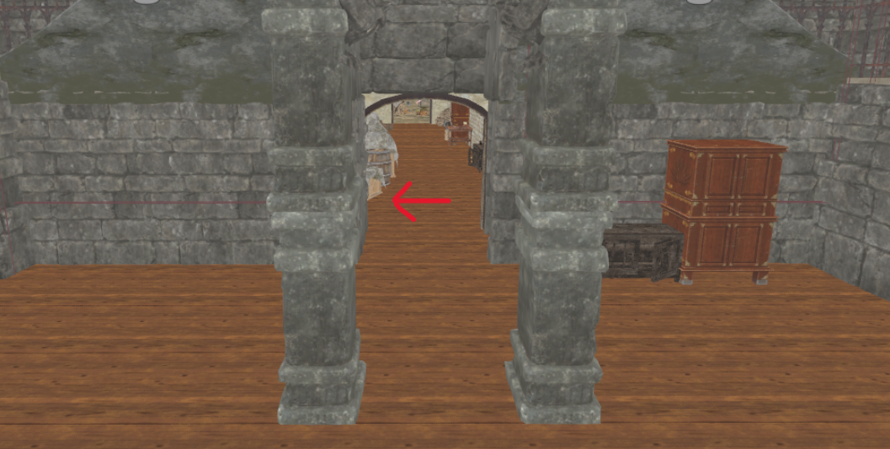

Game Flow
Players meet Tony first, then Barry, then unlock the escape. I guided them with riddles, notes and lighting instead of UI, inspired by Resident Evil 7 and Amnesia.
An abandoned castle, two ghosts called Tony and Barry, and a way out you have to earn.
In VR you stand inside the level, so the map, the route and the sound all decide how scared you feel. I designed how players move through the castle, how the rooms are built, and how audio makes the ghosts feel close. The goal: players know what to do next, but never feel safe.
Players meet Tony first, then Barry, then unlock the escape. I guided them with riddles, notes and lighting instead of UI, inspired by Resident Evil 7 and Amnesia.
Big halls for scale, narrow corridors for tension and small rooms for clues. I took ideas from Hitman's Thornbridge Manor and closed off areas that added nothing.
Ambient wind, directional footsteps and whispers, and triggered sounds. Ghosts are heard before they are seen, and they can change the lighting.
The map below shows the route through the castle, from the first encounter with Tony to Barry's crypt and the escape.


The castle does not explain every step directly. Players have to explore, notice details and interact with the environment to discover how to continue. Two hidden routes reward that curiosity and move the story forward.

Players can push the cabinet aside to uncover a hidden map. The map gives them a clue about where to go next, letting them work out how to continue the story for themselves.
.png)
A concealed door behind the staircase leads into Barry's room. Finding it opens the next part of the castle and brings the player further into the story.
The castle now leads players from Tony to Barry to the exit without handing them instructions, and the sound keeps them on edge. The biggest lesson: flow, map and sound have to be designed together.